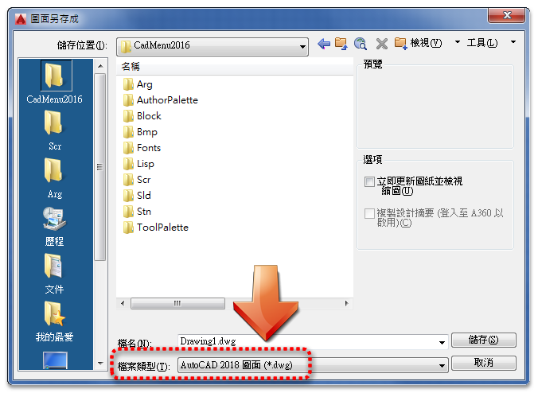

AUTODESK依照往年的慣例，AutoCAD應該會在2017年3月份左右推出「AutoCAD 2018」版本！
這一次AutoCAD 2018將使用一個新的「DWG檔案類型」，將在2017年發佈新的「AutoCAD 2018 圖面(*.dwg)」！
往年的版本都是3年一個DWG檔案類型，而2013的檔案類型維持了五個AutoCAD版本(2013~2017)。
這次終於更新DWG檔案類型，以後不知道是否會以5年一個循環，但是我們也別太傷腦筋無法讀取！
因為依照以往的經驗AutoCAD仍然可以透過轉檔程式(或另存舊檔)來轉成低階版本～
所以各個版本仍然可以開啟圖檔來編輯喔！
另外，基礎功能操作都還是一樣，學習AutoCAD不一定要找最新的版本來學，只要學習了其中一個版本舊可以通用囉～
不過要提醒的最好要了解新版本的新功能，這樣工作階段有需要的時候即可派上用場，這真的是肺腑之言啊...
總之，不管新舊版AutoCAD本用的順手最重要喔～